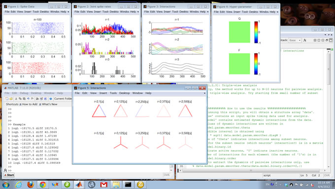
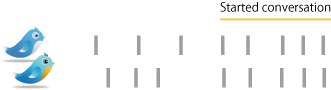
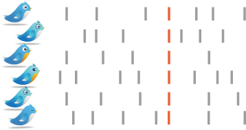

|
Analysis of Dynamic Interactions
State-space analysis of dynamic interactions |
|
Shimazaki, Amari, Brown, and Gruen. PLoS Comput Biol 8(3): e1002385. Open Access |
Web AppThis method can spell out whether or not observed event sequences are correlated even when their simultaneous events appear momentarily. |
The app is running on Python code by Thomas Sharp. |
The code written by Tomas Sharp is available at github.
Full papers Donner C, Obermeyer K, Shimazaki H. Approximate Inference for Time-varying Interactions and Macroscopic Dynamics of Neural Population. PLoS Computational Biology (2017) 13(1): e1005309 [link, code] Shimazaki H., Amari S., Brown E. N., and Gruen S. State-space Analysis of Time-varying Higher-order Spike Correlation for Multiple Neural Spike Train Data. PLoS Computational Biology (2012) 8(3): e1002385. [Open Access: link] Original manuscript Conference papers Donner C and Shimazaki H, Approximate inference method for dynamic interactions in larger neural populations. ICONIP 2016, Part III, LNCS 9949, 104–110, 2016 Shimazaki H., Amari S., Brown E. N., and Gruen S: State-space Analysis on Time-varying Correlations in Parallel Spike Sequences, Proc. IEEE ICASSP2009, 3501-3504. Shimazaki H., Single-trial estimation of stimulus and spike-history effects on time-varying ensemble spiking activity of multiple neurons: a simulation study. J. Phys.: Conf. Ser. (2013) 473 012009 |
Snapshot of analysis of three
simulated neurons  |
|
|
|
Cosyne09 Poster |
Neurons are communicating each other, and jointly work to accomplish their task. When many neurons interact with each other, thier collective state may be explained by higher-order interactions. Since the situation resembles people's activities in our society, here we explain the higher-order interactions, using an example from Twitter. If a twitter user tweets more than once in a 2-minutes window, we consider the user is active in that period. We use a vertical bar to represent the active state. Otherwise, the user is inactive. Suppose two twitter users independently tweet, and then started conversation, their activity may look like...  Even if the two users tweet independently, the tweets can simultaneously happen accidentally. That event is refered to as a chance coincidence. If they simultaneously tweet more frequently than the chance level, we conclude that these two users are `correlated'. The above example explains a pair-wise interaction among two users. In the analysis of population, there may be a collective state of interactions, that can be revealed only by looking at the population as a whole. This state is described using the 'higher-order' interactions. What are the higher-order interactions? We start from a peculiar example. Suppose many people tweet independently each other. Then, all of sudden they tweet simultaneously. The twitter activity may look like...
 Higher-order interaction is required to explain this activity. Why? Since the synchronous event is rare, their occurrence rate is as low as a chance coincidence of two users. Thus, if you pick up a pair of users, you can not spell out that they are correlated. However, if you look at the population, the synchronous event that all users join is not likely to happen by chance. You need higher-order analysis to detect the sparse, yet synchronous events that many users join. What can causes the higher-order activities? There are many mechanisms that can lead to higher-order interactions. It is possible that the users interact each other to produce higher-order interactions. Another mechanism is an apparent interaction due to an unobserved common input to the population. If a certain striking event happens, e.g., announcement of British royal marriage, people are driven by the same event, and tweet simultaneously. Why do we need a time-resolved method? The answer is simple. The frequencies of tweets vary in a day. Thus we need to adjust significance level of occurrence rate of synchronous events. Additionally, the pair and higher-order interactions may also vary in time. The method described in the PLoS CB sequentially estimate the dynamics of higher-order interactions on top of the time-varying occurrence frequencies of individual events. The tweet bird icons are designed by chethstudios. |